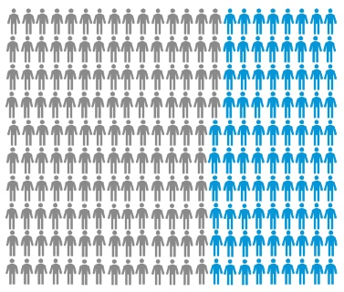

当您决定学习 Maya 时，可能很难知道从何处开始着手。首先，如果您是学生或教师，请访问我们的教育站点来获得对 Autodesk 软件的免费访问权限。对于其他所有人，下载免费试用版。
接下来做什么？之前，我们希望详细了解我们的专业用户最初如何学习使用 Maya，因此我们调查了 230 位成功的 Maya 用户，了解他们一路使用了哪些资源。我们希望此建议能够帮助您从正确的方向着手。
|
Maya 随附的交互式教程 |
Maya 甚至 3D 新手？让 Mayabot 带您踏上探索之旅，了解您需要知道的一切，以便开始这一有趣的游戏化学习体验！ 97% 完成至少一个交互式教程的用户表示，他们最终发现它很有帮助。 您可以在应用程序主页的“快速入门”(Getting Started)选项卡上找到交互式教程。 |
|
Maya 内部工具提示和帮助 |
工具提示等 Maya 内部帮助用于提供有关工具或设置的快速信息，而无需查找。 84% 的成功用户指出他们经常使用 Maya 内部工具提示和帮助。 将鼠标悬停在按钮和图标上即可显示工具提示。如果您未看到工具提示，或者您想隐藏它们，请在“帮助”(Help)首选项中查看相关操作说明。 |
|
Maya 联机帮助 |
就是您现在看到的，很好的开端！ 90% 的成功用户发现 Maya 联机帮助页面全面提供了 Maya 每个功能的信息和教程。如果您想详细了解某个工具或功能，请在此处查看！ 一些有用的页面包括所有 Maya 热键和界面概述。 |
|
YouTube 上有关 Maya 的视频 |
如果您更喜欢看视频，YouTube 上有许多教程，都是由富有才华的热心 Maya 美工人员提供的。 我们甚至举办了Maya 教学频道，其中包含官方初学教程。 有许多视频可供选择，但我们提供了一个页面来帮助您查找有关 Maya 的学习视频。 |
|
Maya 社区的在线论坛 |
Maya 社区是供大家获取建议或共享创作的良好平台。 可在许多不同的站点上与该社区的成员交流。例如 AREA、cgTalk 和 Maya subreddit 等站点。 有关这些站点的详细信息和链接，请参见：Maya 社区。 |
您是否想知道您是否需要参加 Maya 培训？对于一些人而言，课堂培训无疑是最好的方式。但是，我们调查的 230 位 Maya 用户中，86 位用户没有参加过正式培训。他们能够使用他们可以获得的其他资源（例如上文所述的那些资源）来了解 Maya。

144 位成功的 Maya 用户参加过正式培训，86 位成功的 Maya 用户没有参加过正式培训。
所有这 230 位成功的 Maya 用户都必须从某个起点开始。他们并非天生就是专家。他们必须使用资源（例如上文所述的那些资源）才能达到现在的状况。如果您想了解 Maya，最初可能看似很困难。没关系，只需记住一步一步地来。这些资源旨在帮助您完成这个过程。请在此页面上留下评论，让我们了解对您有用的内容！